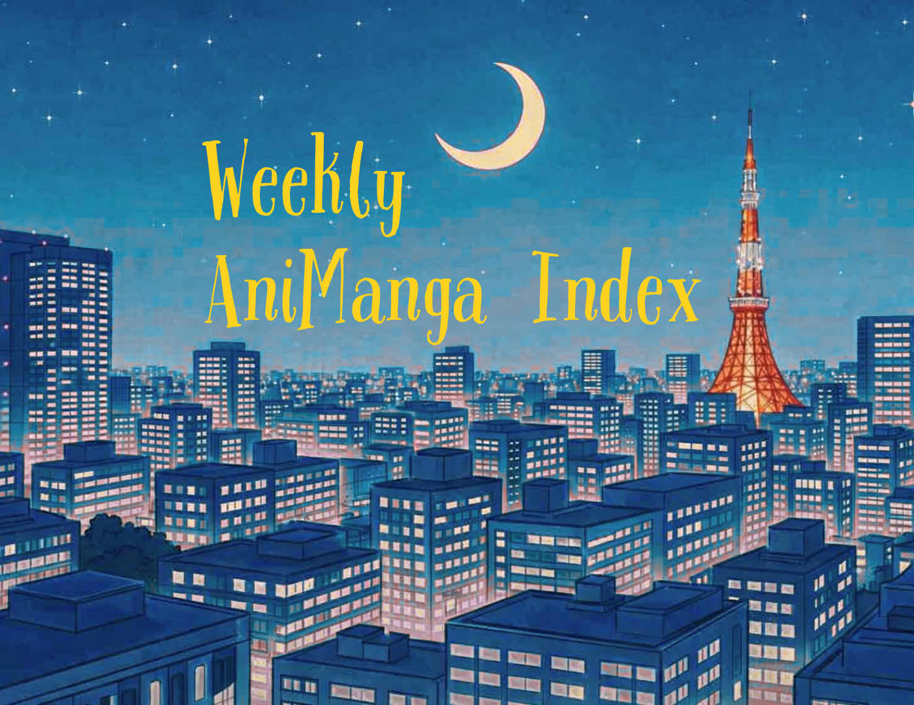

Weekly AniManga IndexRead the latest digest on Substack →
I write about Anime and Manga I follow.
I write about my experience with muscular dystrophy and my passion for anime, books, writing, TV, and music.
A look at anime fandom and culture including convention history from the perceptive of a nerdy thirty year old! Occasionally, posts about anime and manga!
The Window Seat Anime Journal was created to provide a "book club" experience for anime watchers to introduce people to new anime and provide a forum for the thematic exploration that great anime truly deserve.
Reviews, Commentary, and Longform Analysis of stuff that resonates with me emotionally, including but not limited to AniManga, Videogames, Cinema, and Music.
I write short stories, articles about mental health and anime/manga
Talking about the shows and stuff I watch
I make anime a sweeter experience. I cover art history, offer commentary, and reviews for both manga and anime. I'm not a trained anthropologist, but I encourage everyone to join me in my pursuit of more knowledge!
Abir Rahman covers entertainment news, anime, movie and TV show reviews, discussions and analysis. Based in Bangladesh, publishing weekly since 2017 with occasional digital product recommendations.
I'm analyzing anime to see what we can learn from these stories - Psychologically and philosophically.
Talking about my favourite anime and what they mean to me, adding my own personal story and thoughts to something that has touched me deeply, hoping to reach someone else. Also sharing my random thoughts.
It’s a celebration of storytelling in manga
Light novel reviews, format comparisons (LN vs anime, LN vs manga), reading orders, and weekly news takes. Covers 25+ series across isekai, dark fantasy, and romance. Opinionated, casual content written from a reader's perspective with 500+ volumes read since 2015.
A community dedicated to exploring the rich worlds of anime and manga, using these stories to inspire and support our well-being. Our team brings together diverse voices and perspectives to create content that resonates with fans and promotes a deeper understanding of how these mediums can positively influence our lives.
Honey Pages is my little corner of the internet to write about my book Tiers, anime, everyday chaos, and TV commentary.
I share Japanese culture and the fun of the Japanese language through anime.
Manga Emotion Lab explores anime and manga through emotions, choices, and quiet human connections. Rather than reviews or rankings, I write reflective essays about emotional growth, silence, responsibility, and the people who quietly stay beside us.
A publication that connects the world of anime with the realities of everyday life in Japan.
A mix of analyses, lists and drawing comparisons between different works. I try to write about animanga that move me - positive or negative. Through my publication, I try to navigate how different series impact me, what characters I love and why, how certain series can be grouped together coherently and the way I'm feeling about everything!
A newsletter written from inside Japan — analyzing anime through Japanese cultural concepts that subtitles can't translate. Primary focus on Jujutsu Kaisen and the social structures that shaped it.
I write about my experience with muscular dystrophy and my passion for anime, books, writing, TV, and music.
A look at anime fandom and culture including convention history from the perceptive of a nerdy thirty year old! Occasionally, posts about anime and manga!
Awash of Stars is a blog about the process of making art. The artist's influences include a few anime and manga series.
The Window Seat Anime Journal was created to provide a "book club" experience for anime watchers to introduce people to new anime and provide a forum for the thematic exploration that great anime truly deserve.
I write about collecting and investing in vintage Pokémon cards from the Wizards of the Coast era. I share my journey in real time, exploring market behaviour, real-world events, lessons learned, and the balance between nostalgia and making money.
I make anime a sweeter experience. I cover art history, offer commentary, and reviews for both manga and anime. I'm not a trained anthropologist, but I encourage everyone to join me in my pursuit of more knowledge!
AniOcean — a place built for fans who want more than just headlines. From anime reviews and TV discussions to industry gossip and analysis, we cover the entertainment world with honesty and passion.
I'm analyzing anime to see what we can learn from these stories - Psychologically and philosophically.
Monster Lynk is a story inspired by the monster collecting genre and anime. It follows a class of student as they get their own monsters. They must learn to connect and live with them.
My original articles and content on The Saved Game are for gamers, nostalgics, and anyone curious! Helping you to rediscover or find your love for old and new video games!
Talking about my favourite anime and what they mean to me, adding my own personal story and thoughts to something that has touched me deeply, hoping to reach someone else. Also sharing my random thoughts.
Light novel reviews, format comparisons (LN vs anime, LN vs manga), reading orders, and weekly news takes. Covers 25+ series across isekai, dark fantasy, and romance. Opinionated, casual content written from a reader's perspective with 500+ volumes read since 2015.
Manga Emotion Lab explores anime and manga through emotions, choices, and quiet human connections. Rather than reviews or rankings, I write reflective essays about emotional growth, silence, responsibility, and the people who quietly stay beside us.
Oshi-Katsu Future Lab explores Japanese fandom culture, oshi-katsu, and the fan economy from the perspective of media, business, and cultural analysis.
Here I will write and showcase my projects as they are completed and delivered. I also plan to show processes and some older works!
A newsletter unpacking Japanese concepts that don't translate — otaku culture, social norms, anime, manga, and the ideas that reveal how Japanese society actually works. Written in Japanese by a Japanese writer, translated into English.
A newsletter written from inside Japan — analyzing anime through Japanese cultural concepts that subtitles can't translate. Primary focus on Jujutsu Kaisen and the social structures that shaped it.
The world of F.P. Dawe offers a wide variety of series, with written and audio for accessibility. The main showcase is my original short and long form dark fiction, covering horror, fantasy, and science-fiction. I am currently releasing my debut Sci-Fi novel, When the Abyss Stared Back, as an episodic series. However, I also host lore, other creators, a community world building project, and the classics from Poe to Lovecraft.
WARHEIT: A world controlled by a throne named THE CASTLE, is where Tharkane discovered a deep Truth. He single handedly stopped the deadliest war in human history, but vanished somewhere. Now it's upon Neiji and his friends to uncover The Truth about the world they live in, as their teachers lead them to their deaths.
Scenes from my ongoing light novel and other writing projects, as well as silly little manga skits featuring my OCs.
Short stories mainly history, adventure and Animals, post daily 2x stories.
My publication looks at insights on life through the lens of art.
Monster Lynk is a story inspired by the monster collecting genre and anime. It follows a class of student as they get their own monsters. They must learn to connect and live with them.
Awash of Stars is a blog about the process of making art. The artist's influences include a few anime and manga series.
My publication looks at insights on life through the lens of art.
Here I will write and showcase my projects as they are completed and delivered. I also plan to show processes and some older works!
The world of F.P. Dawe offers a wide variety of series, with written and audio for accessibility. The main showcase is my original short and long form dark fiction, covering horror, fantasy, and science-fiction. I am currently releasing my debut Sci-Fi novel, When the Abyss Stared Back, as an episodic series. However, I also host lore, other creators, a community world building project, and the classics from Poe to Lovecraft.
Welcome to a strange place. Where the output is faith, fiction, and fun. I'll be dropping short stories, serialized fiction, articles of faith, game spotlights, my creative process — and whatever else escapes.
I write short stories, articles about mental health and anime/manga
Scenes from my ongoing light novel and other writing projects, as well as silly little manga skits featuring my OCs.
Micro and short fiction with a speculative, whimsical or wobbly bend.
Short stories mainly history, adventure and Animals, post daily 2x stories.
Reviews, Commentary, and Longform Analysis of stuff that resonates with me emotionally, including but not limited to AniManga, Videogames, Cinema, and Music.
Talking about the shows and stuff I watch
Abir Rahman covers entertainment news, anime, movie and TV show reviews, discussions and analysis. Based in Bangladesh, publishing weekly since 2017 with occasional digital product recommendations.
AniOcean — a place built for fans who want more than just headlines. From anime reviews and TV discussions to industry gossip and analysis, we cover the entertainment world with honesty and passion.
Honey Pages is my little corner of the internet to write about my book Tiers, anime, everyday chaos, and TV commentary.
A mix of analyses, lists and drawing comparisons between different works. I try to write about animanga that move me - positive or negative. Through my publication, I try to navigate how different series impact me, what characters I love and why, how certain series can be grouped together coherently and the way I'm feeling about everything!
I write about collecting and investing in vintage Pokémon cards from the Wizards of the Coast era. I share my journey in real time, exploring market behaviour, real-world events, lessons learned, and the balance between nostalgia and making money.
My original articles and content on The Saved Game are for gamers, nostalgics, and anyone curious! Helping you to rediscover or find your love for old and new video games!
I provide a retrospective look at the games I’ve played and my experiences playing them.
Punches and Dragons focuses mainly on Japanese Role Playing Games (JRPGs) with some talk about the video game industry and related topics
Oshi-Katsu Future Lab explores Japanese fandom culture, oshi-katsu, and the fan economy from the perspective of media, business, and cultural analysis.
A publication that connects the world of anime with the realities of everyday life in Japan.
A newsletter unpacking Japanese concepts that don't translate — otaku culture, social norms, anime, manga, and the ideas that reveal how Japanese society actually works. Written in Japanese by a Japanese writer, translated into English.